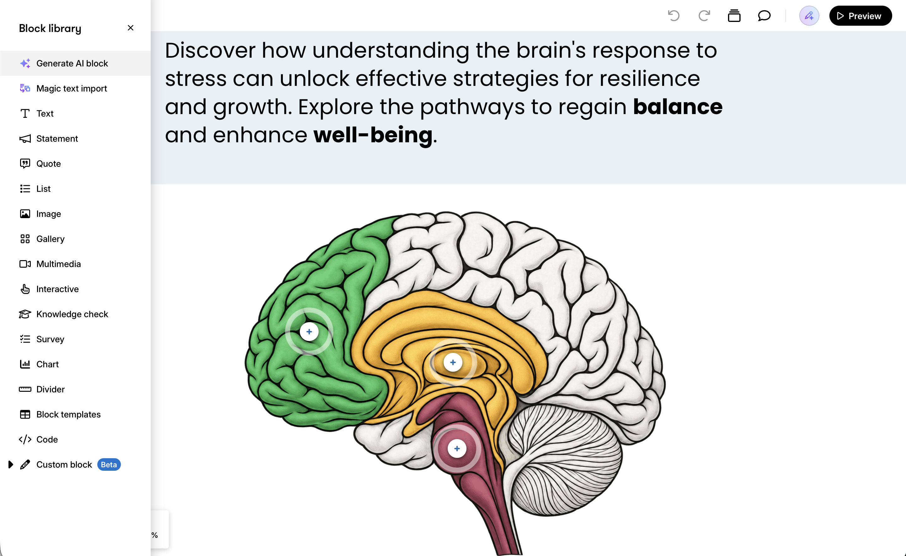
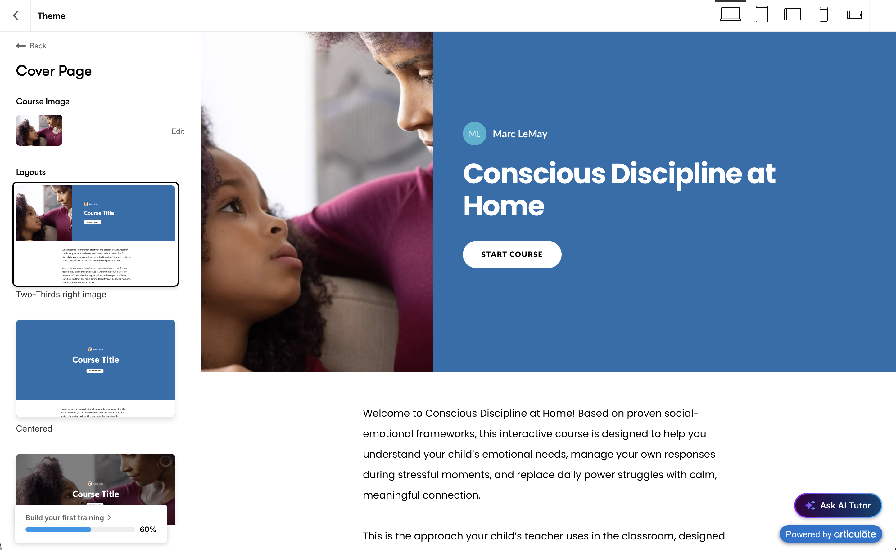
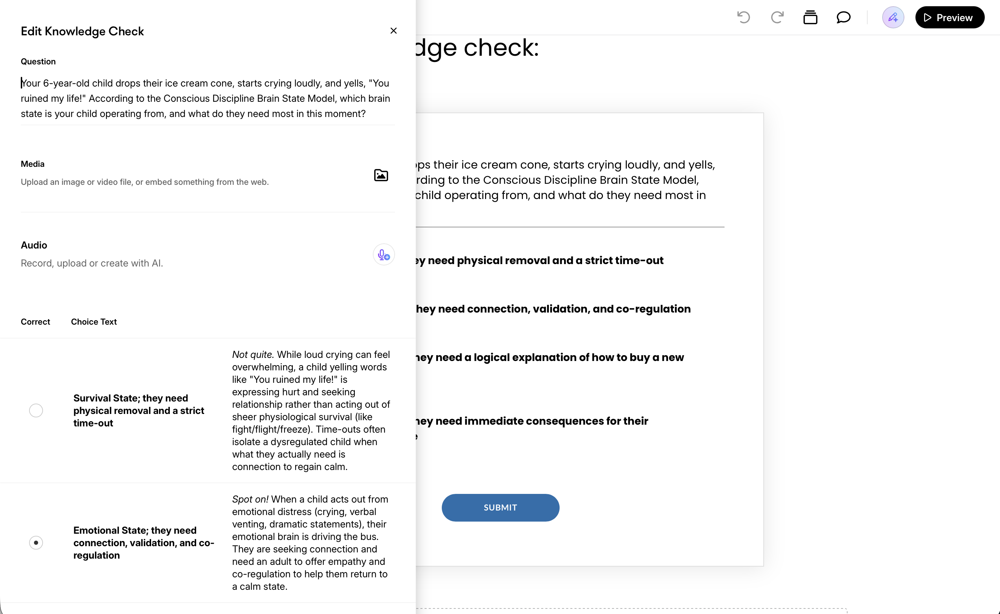

A one-day rebuild in Rise 360 to find out exactly where the tool’s strengths lie, and where it falls short in terms of my design goals.
Most of the module scores what a parent writes in their own words. Rise can’t do that; Storyline can, with custom JavaScript, which is what I already built into the module.
What’s in it
Four lessons: what the approach is, the three brain states, the key terms, and the about page. One knowledge check with feedback on every option.
Time
One day, starting from no experience with the tool.
Built with
Rise 360, from the original module’s own copy. One image made outside Rise.

Anything standard was fast: the visual theme carried across every screen effortlessly; content blocks gave automatic visual panache; the labeled brain graphic looked finished on the first try; and I could do a phone screen check right in the editor. The AI voice tool was also convincing, but was outside the scope of the module as it is now.

I wanted the course to open the way the real module does, on a “hook” question. The cover page option in Rise offered eight fixed layouts, no content blocks, and nowhere to put a necessary disclaimer. I kept hitting similar walls: I couldn’t reveal a list one point at a time, animate the brain state changes the way I wanted, or customize text size for phones. These restrictions help Rise work quickly, of course, but they didn’t allow the flexibility I wanted.

When the content is just reading with multiple-choice checks, the branding is simple, the team I’m working with already uses it, or the timeline is very short. I learned nearly all of its functionality in a day, so I’d use it without hesitation when it’s the best tool.
The reading, the terms, and the multiple-choice check went in Rise; everything that responds to what a parent writes did not. How the rest was built is in the module write-up.